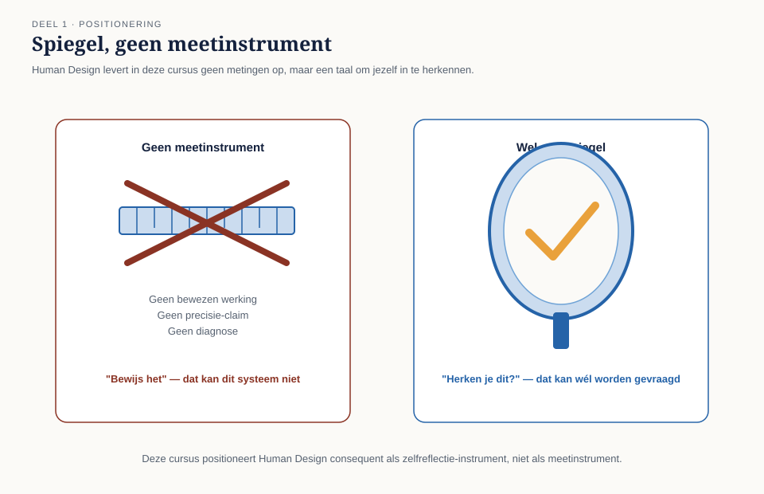
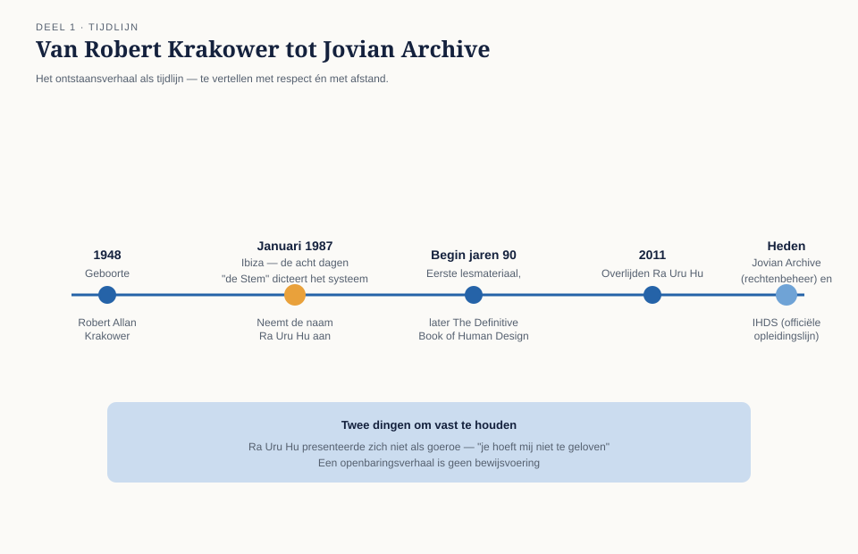
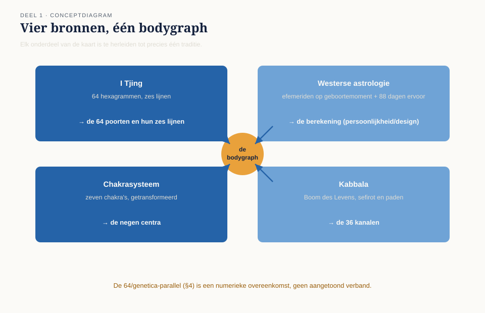
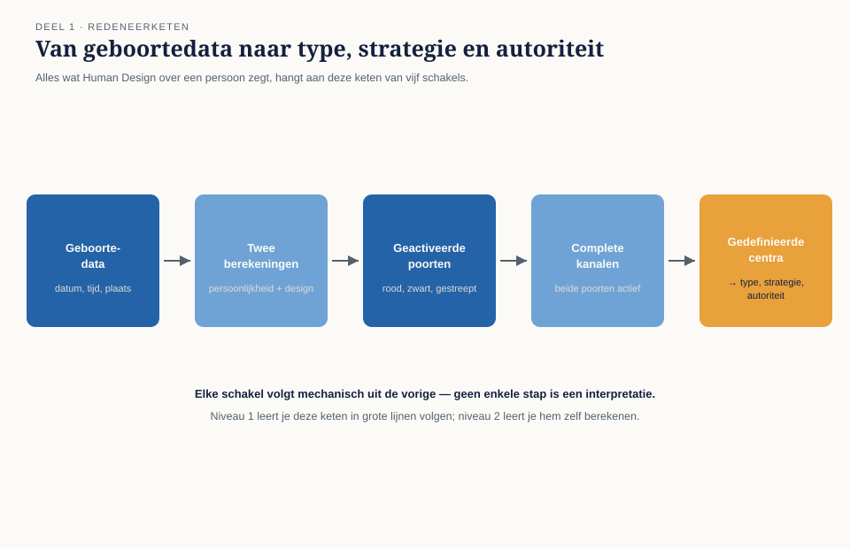

Human Design begint met een verhaal: acht dagen op Ibiza in 1987, en een man die zich Ra Uru Hu ging noemen. In dit deel leert u dat verhaal navertellen zoals een religiewetenschapper dat doet — met respect én met afstand — de vier tradities herkennen waaruit de bodygraph is samengesteld, en de vijf personen ontmoeten die u de hele cursus blijft tegenkomen.
7secties
±2udagdeel + huiswerk
6controlevragen
4bronsystemen
Positionering. Deze cursus behandelt Human Design consequent als spiegel en gespreksinstrument, niet als bewezen wetenschap. Er bestaat geen wetenschappelijk bewijs voor de werkzaamheid of de onderliggende mechanismen van het systeem — dat wordt in dit deel en in elk volgend deel expliciet benoemd, nooit verzwegen.
Niveau 1: ➊ Oorsprong (hier) → ➋ De bodygraph lezen → ➌ Types en strategie → ➍ Autoriteiten → ➎ Centra gedefinieerd → ➏ Centra open → ➐ Het experiment → ➑ Synthese
01
Vooraf: wat je hier komt halen
⏱ 12 min
Human Design wordt door beoefenaars omschreven als een "synthese": een samengesteld systeem dat elementen uit de I Tjing, de westerse astrologie, het chakrasysteem en de Kabbala combineert tot één kaart van de mens, de bodygraph. Miljoenen mensen wereldwijd gebruiken die kaart als taal voor zelfreflectie: waarom kost dít mij energie en dát niet, hoe neem ik besluiten die goed voelen, waar loop ik structureel vast.
Even belangrijk is wat Human Design niet is. Er bestaat geen wetenschappelijk bewijs voor de werkzaamheid of de onderliggende mechanismen van het systeem. De claims over neutrino's en genetica die in de literatuur voorkomen (sectie 4) zijn niet verenigbaar met wat de natuurkunde en biologie weten. Deze cursus behandelt Human Design daarom consequent als spiegel en gespreksinstrument: een gestructureerde taal om over jezelf na te denken, vergelijkbaar met hoe je een goed gekozen metafoor gebruikt. Werkt de spiegel voor jou, dan is dat de waarde. Vraagt iemand je om bewijs, dan is het antwoord eerlijk: dat is er niet.

Figuur 1-1 — spiegel, geen meetinstrument
Deze positionering is geen voetnoot maar een rode draad. Hij keert terug in elk deel en wordt in niveau 3 (deel 22, ethiek en grenzen) zelf onderwerp van de les.
02
Het ontstaansverhaal
⏱ 15 min
Human Design begint met een verhaal, en het is belangrijk het ook als verhaal te leren vertellen.
Robert Allan Krakower, een Canadees die na een loopbaan in media en reclame naar Europa vertrok, leefde in de jaren tachtig op Ibiza. Naar eigen zeggen onderging hij daar in januari 1987 een acht dagen en nachten durende ervaring waarin "de Stem" hem de volledige synthese van het systeem dicteerde — samenvallend, zo vertelde hij later, met de periode waarin het licht van supernova 1987A de aarde bereikte. Hij nam de naam Ra Uru Hu aan, werkte de openbaring uit tot het systeem dat hij Human Design noemde, en begon er vanaf begin jaren negentig les in te geven. Zijn lesmateriaal en het latere standaardwerk (The Definitive Book of Human Design, samengesteld met Lynda Bunnell) vormen tot vandaag de canon. Ra Uru Hu overleed in 2011; zijn nalatenschap wordt beheerd door Jovian Archive, en de officiële opleidingslijn loopt via de International Human Design School (IHDS).

Figuur 1-2 — tijdlijn van Krakower naar Ra Uru Hu
Twee dingen vallen op aan dit verhaal. Ten eerste: Ra Uru Hu zelf presenteerde zich nadrukkelijk niet als goeroe en moedigde aan het systeem te toetsen aan de eigen ervaring — "je hoeft mij niet te geloven" is een terugkerend citaat uit zijn lezingen. Ten tweede: een openbaringsverhaal is geen bewijsvoering. In deze cursus vertellen we het ontstaansverhaal zoals een religiewetenschapper dat doet — met respect én met afstand.
Controlevraag
Uit Werkboek deel 1, Opdracht 1.2 — het verhaal navertellen
1Aan welke drie eisen moet een navertelling van het ontstaansverhaal voldoen, zodat hij klopt voor zowel een enthousiaste beoefenaar als een kritische journalist?Toon antwoord
De navertelling moet feitelijk correct zijn (namen, jaartallen, gebeurtenissen), mag geen gelovige taal gebruiken ("toen werd geopenbaard dat...") en ook geen spottende taal ("hij beweerde stemmen te horen..."), en moet de status van het verhaal duidelijk maken: het is een verhaal, geen bewijsvoering.
03
De vier bronsystemen
⏱ 20 min
De bodygraph is opgebouwd uit vier tradities. Je hoeft geen van de vier diepgaand te beheersen, maar je moet wél kunnen aanwijzen welk onderdeel waarvandaan komt — dat maakt je later een veel betere uitlegger.
De I Tjing — de 64 poorten
De Chinese I Tjing (Boek der Veranderingen) kent 64 hexagrammen: figuren van zes doorbroken of ononderbroken lijnen. Human Design neemt dit getal en die logica over: de bodygraph telt 64 poorten, elk gekoppeld aan een hexagram, en elke poort kent zes lijnen — de basis voor de profielen die je in niveau 2 leert. Beoefenaars wijzen graag op de parallel tussen 64 hexagrammen en 64 codons in het DNA; onthoud dat dit een numerieke overeenkomst is, geen aangetoond verband.
De westerse astrologie — de berekening
De posities van zon, maan en planeten op het geboortemoment bepalen welke poorten in een chart "geactiveerd" zijn. Human Design rekent daarvoor met dezelfde efemeriden (planetentabellen) als de astrologie, maar projecteert de posities op het poortenwiel van de mandala in plaats van op dierenriemtekens. Kenmerkend en uniek voor Human Design is de tweede berekening: naast het geboortemoment (de "persoonlijkheid", zwart weergegeven) wordt een moment van ongeveer 88 dagen vóór de geboorte berekend (het "design", rood weergegeven). De combinatie van beide vult de bodygraph.
Het chakrasysteem — de negen centra
Het klassieke Indiase model kent zeven chakra's. Human Design transformeert dit tot negen centra (hoofd, ajna, keel, G, hart/ego, sacraal, milt, solar plexus, wortel), elk met een eigen thema. Een centrum is gedefinieerd (ingekleurd) of open (wit) — het onderscheid waar in deel 5 en 6 vrijwel alles om draait.
De Kabbala — de kanalen
De structuur van verbindingslijnen tussen de centra is geïnspireerd op de Boom des Levens uit de joodse mystiek, met zijn sefirot en verbindingspaden. In de bodygraph heten die verbindingen kanalen: 36 vaste routes tussen twee poorten. Zijn beide poorten van een kanaal geactiveerd, dan is het kanaal compleet en definieert het de twee centra die het verbindt.

Figuur 1-3 — vier bronnen, één bodygraph
De synthese: één kaart
Zo ontstaat de redeneerketen die je in niveau 2 volledig leert beheersen, maar nu al in grote lijnen kunt volgen: geboortedata → twee berekeningen → geactiveerde poorten → complete kanalen → gedefinieerde centra → type, strategie en autoriteit. Alles wat Human Design over een persoon zegt, hangt aan deze keten.

Figuur 1-4 — de redeneerketen als pijldiagram
Controlevraag
Uit Werkboek deel 1, Opdracht 1.3 — bronnenmatch
1Bij welke bron horen de 64 poorten, en bij welke horen de 36 kanalen als verbindingsstructuur?Toon antwoord
De 64 poorten komen uit de I Tjing (de 64 hexagrammen). De 36 kanalen komen uit de Kabbala, geïnspireerd op de verbindingspaden van de Boom des Levens.
2Welke bron levert het gebruik van efemeriden, en welk element van de bodygraph is eigen aan Human Design en komt uit geen van de vier tradities?Toon antwoord
Efemeriden (planetentabellen) komen uit de westerse astrologie. De berekening op 88 dagen vóór de geboorte (het "design") is uniek voor Human Design — geen van de vier bronsystemen kent deze tweede berekening; die is eigen aan de synthese van Ra Uru Hu.
04
De moderne claims — en wat de wetenschap zegt
⏱ 15 min
De traditionele bronnen presenteert Human Design als erfgoed; daarnaast doet de canon twee moderns aandoende claims die je moet kennen omdat je ze overal tegenkomt.
De neutrinoclaim. Volgens de leer dragen neutrino's — deeltjes die met miljarden per seconde door alles heen bewegen — informatie over die op het geboortemoment het design "imprint". De natuurkunde kent neutrino's inderdaad, maar juist hun kenmerk is dat ze vrijwel nergens mee wisselwerken; van informatieoverdracht aan een lichaam, laat staan een blijvende imprint, is geen sprake. Dat Ra Uru Hu in 1987 stelde dat neutrino's massa hebben en dit later (1998) experimenteel bevestigd werd, wordt in de gemeenschap vaak als bewijs aangehaald; het bewijst hooguit dat één voorspelling uit een groot verhaal toevallig klopte.
De genetische taal. Termen als "genetische matrix" en de 64-codonparallel suggereren een biologische basis. Die is er niet: er bestaat geen peer-reviewed onderzoek dat Human Design-types, -centra of -poorten koppelt aan genetica, persoonlijkheidsmetingen of gedragsuitkomsten.
Hoe je hiermee omgaat
Niet door de claims te verzwijgen, en niet door ze te verdedigen. De professionele houding die deze cursus aanleert: benoem de claim, benoem de status ("onbewezen, strijdig met de huidige wetenschap"), en verplaats het gesprek naar waar de waarde wél zit — het reflectiegesprek. Wie dat consequent doet, is zowel voor enthousiaste als voor sceptische gesprekspartners een betrouwbare gids.
Controlevraag
Uit Werkboek deel 1, Opdracht 1.4 — de claimtafel
1Wat is het vaste drieluik om te reageren op een claim zoals "neutrino's leggen je design vast" of "de 64 poorten bewijzen een genetische basis"?Toon antwoord
Benoem de claim → benoem de status → verplaats naar de waarde. Eerst herhaal je wat er precies beweerd wordt, dan benoem je eerlijk dat de claim onbewezen en strijdig met de huidige wetenschap is, en daarna verplaats je het gesprek naar waar de waarde van het systeem wél zit: het reflectiegesprek.
05
Waarom mensen er tóch iets aan hebben
⏱ 12 min
Als het systeem niet bewezen is, waarom werkt het dan voor zoveel mensen? Drie eerlijke verklaringen, die je als begeleider paraat moet hebben:
Structuur voor zelfreflectie. De bodygraph dwingt tot vragen die mensen zichzelf zelden stellen: waar komt mijn energie vandaan, hoe besluit ik eigenlijk, wat neem ik van anderen over? Het frame is arbitrair; de vragen zijn waardevol.
Permissie. Veel gebruikers ervaren het als opluchting om te horen dat rust nodig hebben, wachten, of juist initiëren "bij hun ontwerp hoort". Die permissie kan gedragsruimte geven — en kan ook doorslaan naar excuus, een valkuil die in deel 7 en 22 terugkeert.
Barnum- en bevestigingseffecten. Beschrijvingen zijn breed genoeg om herkenning op te roepen (het Barnum-effect), en wie eenmaal een label heeft, ziet bevestiging overal. Dit verklaart een groot deel van de "rake" ervaring — en een goede begeleider weet dat.
Geen ontmaskering, maar gereedschap
Deze drie verklaringen zijn geen ontmaskering maar gereedschap: ze vertellen je waar de echte werkzame bestanddelen zitten, zodat je die bewust kunt inzetten.
06
Hoe deze cursus werkt
⏱ 14 min
Drie niveaus, 24 delen. Niveau 1 (delen 1-8): de basis — types, strategie, autoriteit, centra, het experiment. Niveau 2 (delen 9-17): chartanalyse — profielen, poorten, kanalen, circuits, definitie, conditionering, relaties. Niveau 3 (delen 18-24): de professionele praktijk — readingmethodiek, cycli, gezin, teams, ethiek, marathon en capstone.
Eigen leerlijn. Deze cursus is een zelfstandige leerlijn en geeft geen officieel Human Design-certificaat; de officiële analistenopleiding loopt via de IHDS. Wil je die route later bewandelen, dan is deze cursus een gedegen ondergrond.
Vijf vaste personen. Emma (Generator), Jasper (Projector), Sofie (Manifesting Generator), Ruben (Manifestor) en Lena (Reflector) lopen door alle delen mee. Hun volledige introductie staat in het casusdossier.
De grondregel. Alles wat je in deze cursus leert, bied je anderen aan als mogelijkheid ter toetsing, nooit als vaststaand feit over wie zij zijn. Dat is de eerste en belangrijkste beroepsregel — de rest van niveau 3 bouwt erop voort.
Persoon
Type
Context
Emma van Dijk (34)
Generator
Zorgcoördinator in een verpleeghuis
Jasper de Boer (41)
Projector
IT-consultant, overweegt zelfstandigheid
Sofie Janssen (28)
Manifesting Generator
Ondernemer (foodtruck + catering)
Ruben Vermeulen (52)
Manifestor
Docent, net benoemd tot schoolleider
Lena Kovač (39)
Reflector
HR-adviseur, werkt op wisselende locaties
Controlevraag
Uit Werkboek deel 1, Opdracht 1.5 — kennismaking met de vijf
1Welke vijf personen lopen door de hele cursus mee, en met welk type worden zij in niveau 1 geïntroduceerd?Toon antwoord
Emma van Dijk (Generator), Jasper de Boer (Projector), Sofie Janssen (Manifesting Generator), Ruben Vermeulen (Manifestor) en Lena Kovač (Reflector). Samen dekken zij het volledige spectrum van de vijf types; hun designs zijn gestipuleerd voor didactische doeleinden, niet berekend uit echte geboortedata.
07
Samenvatting
⏱ 10 min
Human Design is een in 1987 door Ra Uru Hu (Robert Krakower) geïntroduceerde synthese van I Tjing (64 poorten, zes lijnen), astrologie (berekening op geboortemoment plus 88 dagen ervoor), chakrasysteem (negen centra) en Kabbala (36 kanalen). Het systeem kent geen wetenschappelijke onderbouwing; de neutrino- en genetica-claims zijn onhoudbaar. De waarde zit in het gebruik als gestructureerd zelfreflectie-instrument, en de werkzame bestanddelen daarvan — goede vragen, permissie, herkenning — zijn benoembaar. Deze cursus leert je het systeem grondig beheersen én er eerlijk over communiceren; die combinatie onderscheidt een professional van een gelovige.
Begrip
Omschrijving
Bodygraph
De grafische kaart van negen centra, 36 kanalen en 64 poorten
Poort
Een van de 64 activatiepunten, ontleend aan de hexagrammen van de I Tjing
Kanaal
Vaste verbinding tussen twee poorten; compleet als beide poorten geactiveerd zijn
Centrum
Een van de negen energiehubs; gedefinieerd (ingekleurd) of open (wit)
Persoonlijkheid / Design
De zwarte berekening (geboortemoment) respectievelijk de rode berekening (±88 dagen ervoor)
Ra Uru Hu
Robert Allan Krakower (1948-2011), grondlegger van het systeem
Controlevraag
Uit Werkboek deel 1, Opdracht 1.6 — reflectie: de spiegel-afspraak
1Wat is de grondregel van deze cursus, en waarom is die de eerste en belangrijkste beroepsregel?Toon antwoord
De grondregel: alles wat je leert, bied je anderen aan als mogelijkheid ter toetsing, nooit als vaststaand feit over wie zij zijn. Dit blad komt in deel 22 (ethiek) terug — de regel is fundamenteel omdat het hele systeem onbewezen is (sectie 1 en 4): wie de spiegel als meetlat gaat gebruiken, overschrijdt precies de grens die deze cursus vanaf dag één bewaakt.
Verder naar deel 2
Deel 2 leert je een chart systematisch lezen — de negen centra, poorten, kanalen en hangende poorten — met het zes-stappenformulier, nog zonder te duiden. Neem je eigen chartafdruk mee.